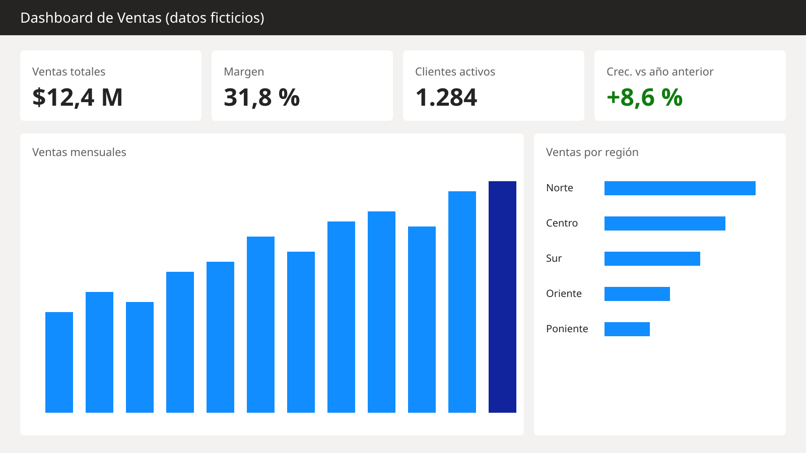

La gerencia comercial armaba el reporte de ventas a mano en Excel cada mes. Construí un dashboard en Power BI que se actualiza solo y muestra ventas, margen y clientes por región.

Vista general. Datos ficticios con la misma estructura que el original.
Describe en 2 o 3 frases la situación antes del dashboard: quién lo necesitaba, qué dolía y qué decisión no se podía tomar bien.
Ventas YoY % =
VAR Actual = [Ventas]
VAR Anterior = CALCULATE ( [Ventas], SAMEPERIODLASTYEAR ( 'Fecha'[Fecha] ) )
RETURN DIVIDE ( Actual - Anterior, Anterior )Qué cambió después: tiempo ahorrado, decisiones que se tomaron, quién lo usa hoy.
Por confidencialidad, los nombres, montos y regiones de este caso fueron reemplazados por datos ficticios.